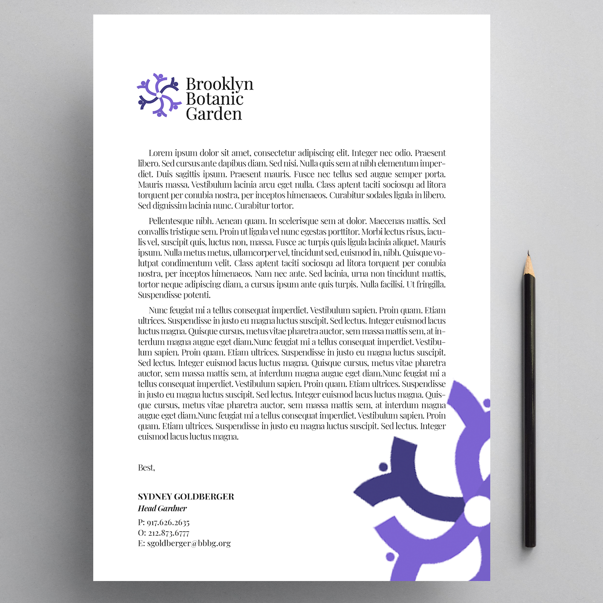
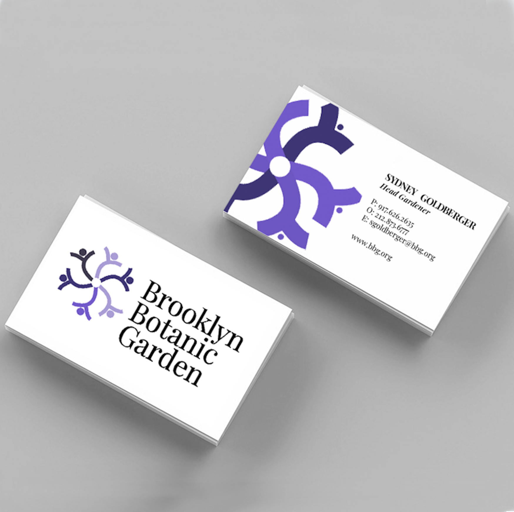
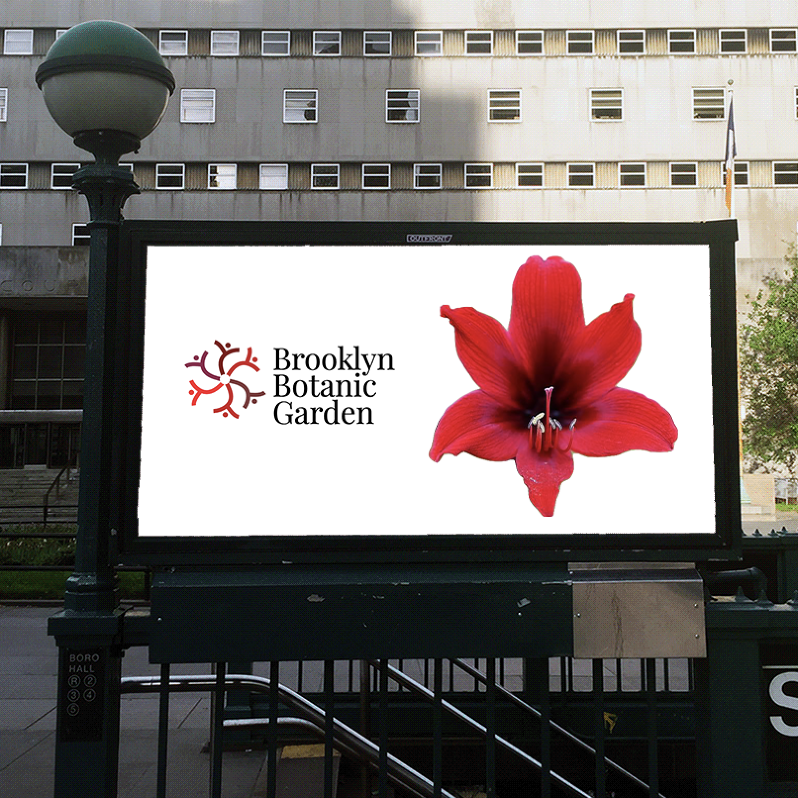
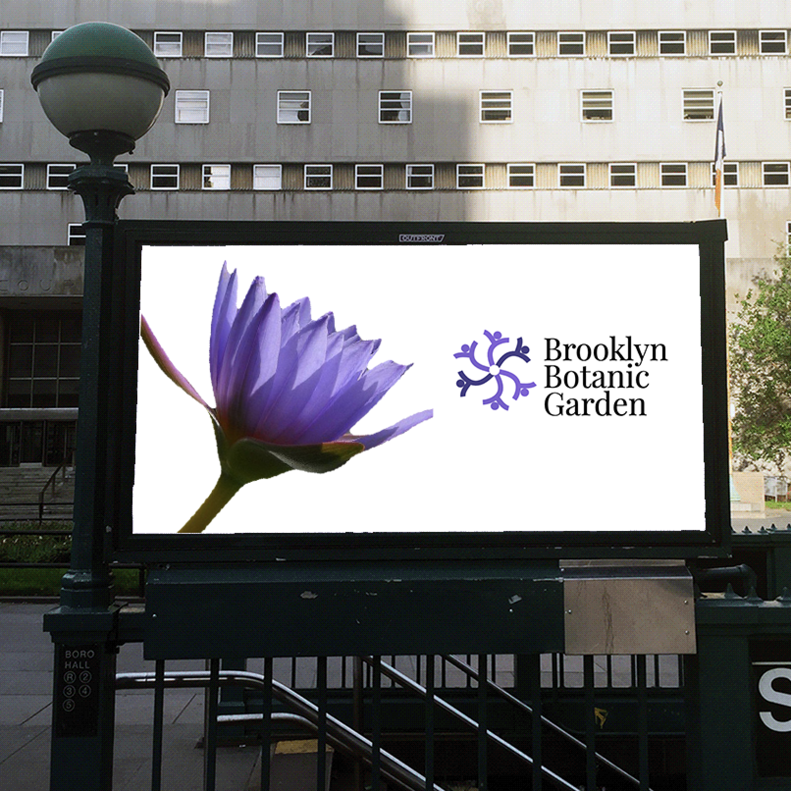
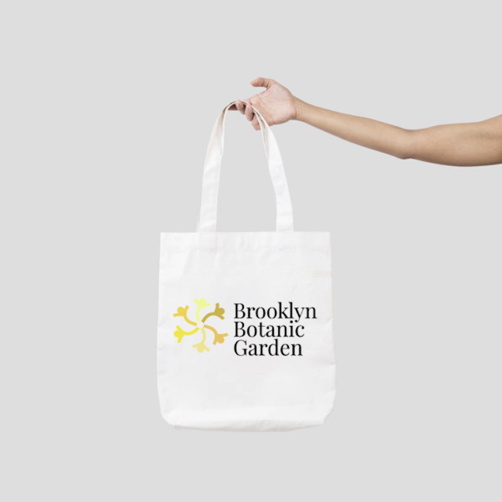

Generative Identity Design: Brooklyn Botanic Garden
Parsons School of Design - Fall 2020
HTML, CSS, JavaScript
I designed a new generative identity system for the Brooklyn Botanic Garden that captures its community and
education focused spirit. Not only is the nature within the garden constantly evolving, but the institution
as a whole is committed to remain a relevant part of the community. This made the garden the perfect subject
for a new generative identity deisgn.
Click here to view the generative logo.






